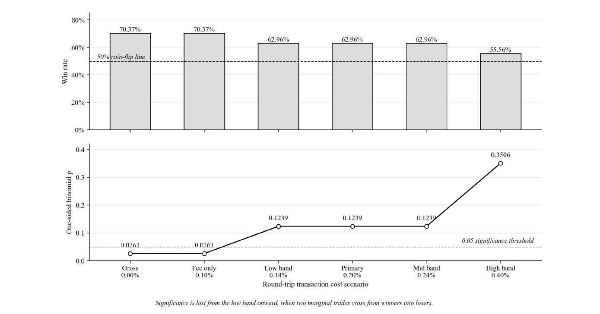
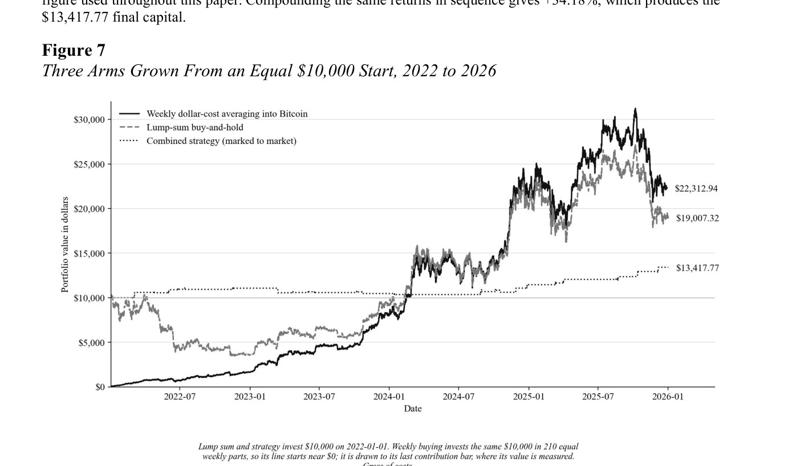
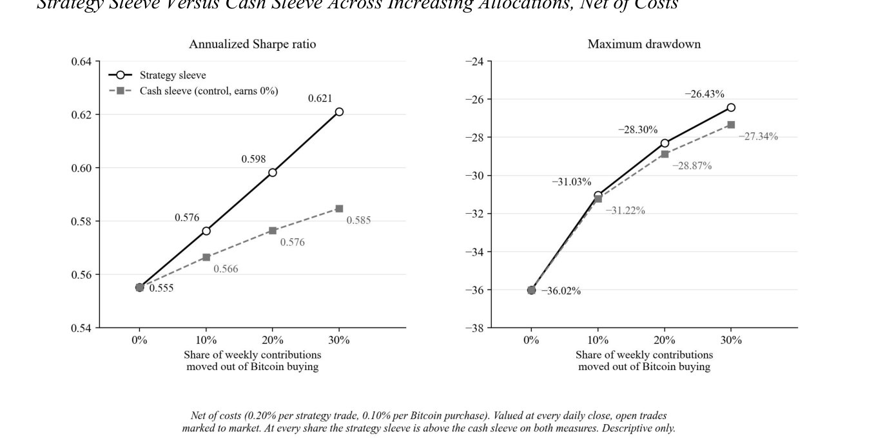
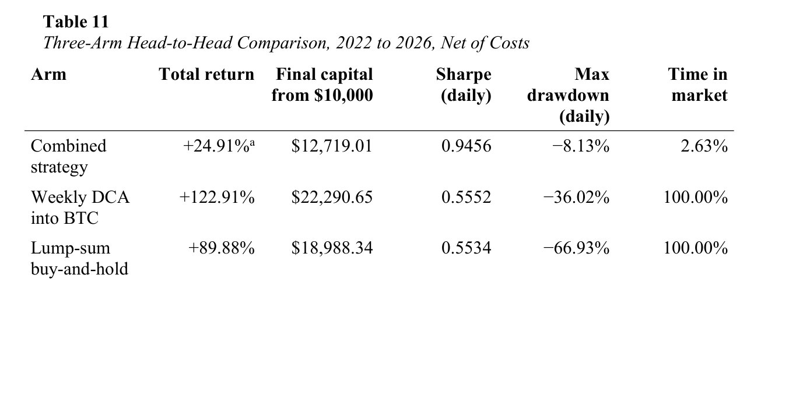

01
Wins, until costs show up
The rule won 19 of 27 trades before costs. Add a realistic 0.20% trading cost and the result is no longer clearly better than luck (p from 0.026 to 0.124).
A rule-based Bitcoin trading strategy tested against dollar-cost averaging, 2022 to 2026.

Positive before costs, but after a 0.20% cost it cannot be told apart from zero.
Not on final money. It did fall much less, and a small slice inside a weekly plan helped.
No. On 1-hour candles the same rules lost 0.18% per trade after costs.

The rule won 19 of 27 trades before costs. Add a realistic 0.20% trading cost and the result is no longer clearly better than luck (p from 0.026 to 0.124).
The same $10,000 became $22,313 by buying weekly and $13,418 with the rule. The rule was in the market only 2.6% of the time, so it fell far less.

Moving 30% of weekly contributions into the rule lifted the Sharpe ratio from 0.555 to 0.621 and cut the worst drop from 36% to 26%.

Combined strategy, weekly buying and a one-time lump sum, side by side on return, drawdown and time in the market.
The rules were fixed on 2018 to 2022 charts before testing. A January to July 2026 forward test lost 3.45% over four trades, too few to settle anything. This is research, not investment advice.